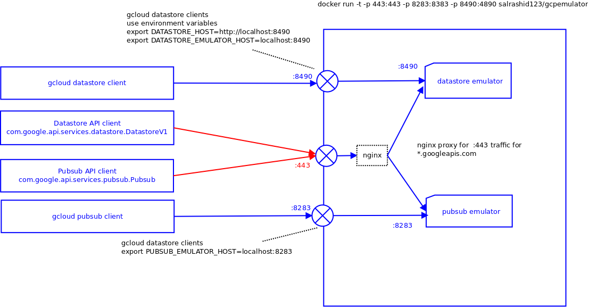

ARTICLES
Proxy container for Google Cloud Platofrm pubsub and datastore emulators.
NOTE: 12/30/19 : This article is very old; while it probably does run to some extent, i’m not sure if the tooling is still needed. I’ve removed this from GCP Blog to reduce some noise; i’m keeping it in my archive here….
Proxy server and container for GCP Cloud PubSub and Cloud Datastore emulators. In addition, the container runs an nginx HTTPS proxy infront of the PubSub|Datastore emulators so that even direct references to pubsub.googleapis.com:443 and datastore.googleapis.com:443 are redirected to the respective emulator.
There are two modes you can use this:
- A container running
gcloud emulators <pubsub|datastore>. You can use this mode to test your code built with gcloud-* libraries - A container running these emulators but one that accepts traffic intended for (pubsub|datastore).googleapis.com:443. In this mode, you can even use generic, non-gcloud libraries with this api. For example. you can use this with Pubsub (com.google.api.services.pubsub) and Datastore (com.google.api.services.datastore)
The second mode requires some significant retooling and reconfiguration on your host laptop/system (i.,e you need access to redirect DNS/hosts, install a trust chain for a CA (CA_cert.pem) that issued a cert for CN=*.googleapis.com which already resides inside the container (goog_cert.pem).

Also see * docker.io/salrashid123/gcpemulator * https://github.com/SaMnCo/docker-pubsub-emulator * Google gcloud emulators * gcloud-python * Google PubSub Libraries * Google Cloud Datastore Libraries * Cloud Datastore Local Development Server
NOTE The datastore emulator uses the legacy mode:
command=/root/google-cloud-sdk/bin/gcloud beta emulators datastore start --host-port 0.0.0.0:8490 --legacy
Usage
To use, you need to * If you want to use gcloud-python or gcloud-java, you do not need to change the hosts file or add certificates. These libraries automatically read in environment vairables the emulators set. Please be sure to run the gcloud-* sample in the same shell or set the environment variables.
If you do NOT use gcloud-* libraries but instead want to use standard, uncurated googleapi libraries like pubsub-java, pubsub-python, datastore-java, datastore-python, then you need to modify DNS and the certificate trust:
- Change the DNS or /etc/hosts file to point pubsub.googleapis.com (and if using SSL proxy for datastore, www.googleapis.com)
- Install the CA_crt.pem to ** Java cacerts ** Python httplib cacerts.txt ** System (not recommended as you are overriding your system’s trust store; most companies would frown on this)
NOTE The proxy sends authentication headers to the proxy. If you do not want to transmit the auth headers, you can override the access_token field before the API call.
sudo docker run -t -p 443:443 -p 8283:8283 -p 8490:8490 salrashid123/gcpemulator
You can also build the docker image from scratch instead of using prebuild salrashid123/gcpemulator
gcloud-python samples
If you want to use the emulators with ordinary gcloud-* libraries, thats much more straightforward: * Just start the emulator without using port 443
docker run -e CLOUDSDK_CORE_PROJECT=$(gcloud config list --format='value(core.project)') -p 8283:8283 -p 8490:8490 salrashid123/gcpemulator
- for Datastore, export environment variables:
export DATASTORE_EMULATOR_HOST=<docker_host_ip>:8490
export DATASTORE_HOST=http://<docker_host_ip>:8490
- run a sample code as such:
import gcloud
from gcloud.datastore.client import Client
from gcloud.datastore.entity import Entity
from gcloud.datastore.key import Key
def datastore():
try:
ds_target = os.environ['DATASTORE_EMULATOR_HOST']
print ds_target
logging.info("DATASTORE_EMULATOR_HOST " + pubsub_target)
except KeyError:
logging.error("DATASTORE_EMULATOR_HOST env variable not found")
ds = gcloud.datastore.client.Client()
k = ds.key('Employee', 5629499534213120)
result = ds.get(k)
if (result is None):
return "Key Not found"
logging.info("Found entity: " + str(result.key.id))
For Pubsub,
export the variables
export PUBSUB_EMULATOR_HOST=<docker_host_ip>:8283- execute a client like:
def pubsub(): try: pubsub_target = os.environ['PUBSUB_EMULATOR_HOST'] logging.info("PUBSUB_EMULATOR_HOST " + pubsub_target) except KeyError: logging.error("PUBSUB_EMULATOR_HOST env variable not found") client = gcloud.pubsub.client.Client() try: topic = client.topic('topic_name') topic.create() except: logging.error("Unable to create topic " ) topics, token = client.list_topics() r = '' for topic in topics: r = r + topic.name + '<br/>' logging.info(topic.name)
Thats it. You can ignore the following sections because it only relevant if you want to override the pubsub/datastore endpoint for legacy google APIs (non-gcloud-*).
Note: if you want to run code in a container but need access to the emulator container, you will need to pass in some environment variables eg:
docker run -t -e CLOUDSDK_CORE_PROJECT=$(gcloud config list --format='value(core.project)') \ -e DATASTORE_HOST=http://emulator_ip:8490 \ -e DATASTORE_EMULATOR_HOST=emulator_iip:8490 \ -e PUBSUB_EMULATOR_HOST=emulator_ip:8283 \ your_code_container
###DNS Update DNS resolution for pubsub.googleapis.com and datastore.googleapis.com
/etc/hosts
127.0.0.1 pubsub.googleapis.com datastore.googleapis.com
/etc/init.d/nscd restart
###JAVA
If you are using the gcloud-java libraries, simply run gcloud beta emulators datastore start and in the same shell run gcloud-java for datastore. For PubSub, run gcloud beta emulators pubsub start and in the same shell run gcloud-java for pubsub
If you are using the raw, uncurated libraries, you need to update the cacerts file used by the JRE (default password is ‘changeit’). Copy the bundled root cert to /tmp/CA_crt.crt. Then import the cert into your java cacerts file.
$JDK_HOME/jre/lib/security
keytool -keystore cacerts -importcert -alias testeso -file /tmp/CA_crt.crt
keytool -list -keystore cacerts
testeso, Feb 1, 2016, trustedCertEntry,
Certificate fingerprint (SHA1): 32:DD:B7:7D:7C:5E:D3:93:22:2F:C4:44:B3:5D:28:E9:41:A8:96:2C
Then to run
cd gcpemulator/java
mvn install
mvn exec:java
###PYTHON
If you are using the gcloud-python libraries, simply run gcloud beta emulators datastore start and in the same shell run gcloud-python datastore. For PubSub, run gcloud beta emulators pubsub start and in the same shell run gcloud-python pubsub
If you are using the raw, uncurated libraries,
cd gcpemulator/py
virtualenv gcd
source gcd/bin/activate
pip install -r requirements.txt
Now you need to add the CA_cert.pem to the trust store for the local virtualenv httplib2 (used by google api client library). Copy the bundled root cert to /tmp/CA_crt.crt.
gcd/local/lib/python2.7/site-packages/httplib2/cacerts.txt
awk 'FNR==1{print ""}1' gcd/local/lib/python2.7/site-packages/httplib2/cacerts.txt ../dockerimage/html/CA_crt.pem > /tmp/cacerts.txt && cp /tmp/cacerts.txt gcd/local/lib/python2.7/site-packages/httplib2/cacerts.txt
Then to run
python pubsubclient.py
python clouddatastoreclient.py
####CURL
To add the certifiate to the system truststore: on debian:
cd /usr/share/ca-certificates/extra
cp /tmp/CA_crt.pem CA_crt.crt
dpkg-reconfigure ca-certificates
After this, you can use curl directly without cert warnings:
curl -X PUT https://pubsub.googleapis.com/v1/projects/p0/topics/t0
curl -X GET https://pubsub.googleapis.com/v1/projects/p0/topics
{
"topics": [
{
"name": "projects/p0/topics/t0"
}
]
}
Sample output
sudo docker run -t -p 443:443 -p 8283:8283 -p 8490:8490 salrashid123/gcpemulator
2016-02-15 21:42:01,969 CRIT Supervisor running as root (no user in config file)
2016-02-15 21:42:01,969 WARN Included extra file "/etc/supervisor/conf.d/supervisord.conf" during parsing
2016-02-15 21:42:01,988 INFO RPC interface 'supervisor' initialized
2016-02-15 21:42:01,988 CRIT Server 'unix_http_server' running without any HTTP authentication checking
2016-02-15 21:42:01,989 INFO supervisord started with pid 1
2016-02-15 21:42:02,992 INFO spawned: 'nginx' with pid 7
2016-02-15 21:42:02,994 INFO spawned: 'datastore' with pid 8
2016-02-15 21:42:02,998 INFO spawned: 'pubsub' with pid 9
2016-02-15 21:42:03,993 INFO success: nginx entered RUNNING state, process has stayed up for > than 1 seconds (startsecs)
2016-02-15 21:42:03,993 INFO success: datastore entered RUNNING state, process has stayed up for > than 1 seconds (startsecs)
2016-02-15 21:42:04,175 INFO success: pubsub entered RUNNING state, process has stayed up for > than 1 seconds (startsecs)